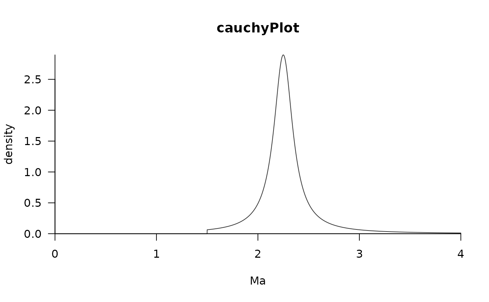

Plot distribution from MCMCtree node estimations
plotMCMCTree.RdEstimate the offset and scale paramaters of a soft-tailed cauchy distribution and output trees for MCMCtree input
Usage
plotMCMCtree(
parameters,
method = c("skewT", "skewNormal", "cauchy", "gamma", "bound"),
title,
upperTime,
lowerTime = 0,
plotMCMCtreeData = TRUE
)Arguments
- parameters
output parameters from node estimation function
- method
one of skewT, skewNormal, cauchy, gamma, or bound
- title
title for the plot
- upperTime
maxmimum age for x-axis plot
- lowerTime
maxmimum age for x-axis plot (default = 0)
- plotMCMCtreeData
If TRUE returns co-ordinates to plot distributions to allow greater flexibility (default = TRUE)
Value
plot of the specified prior applied for a node
If plotMCMCtreeData=TRUE x and y coordinates of distributions from 0 to upperTime on x axis
Examples
data(apeData)
attach(apeData)
#> The following objects are masked from apeData (pos = 4):
#>
#> apeTree, maximumTimes, minimumTimes, monophyleticGroups
#> The following objects are masked from apeData (pos = 6):
#>
#> apeTree, maximumTimes, minimumTimes, monophyleticGroups
#> The following objects are masked from apeData (pos = 7):
#>
#> apeTree, maximumTimes, minimumTimes, monophyleticGroups
#> The following objects are masked from apeData (pos = 8):
#>
#> apeTree, maximumTimes, minimumTimes, monophyleticGroups
#> The following objects are masked from apeData (pos = 9):
#>
#> apeTree, maximumTimes, minimumTimes, monophyleticGroups
#> The following objects are masked from apeData (pos = 10):
#>
#> apeTree, maximumTimes, minimumTimes, monophyleticGroups
#> The following objects are masked from apeData (pos = 11):
#>
#> apeTree, maximumTimes, minimumTimes, monophyleticGroups
#> The following objects are masked from apeData (pos = 12):
#>
#> apeTree, maximumTimes, minimumTimes, monophyleticGroups
# create monophyletic groups descending from nodes 8, 10, 11, and 13
monophyleticGroups <- tipDes(apeData$apeTree, c(8,10,11,13))
minimumTimes <- c("nodeOne"=15, "nodeTwo"=6,
"nodeThree"=8, "nodeFour"=13) / 10
maximumTimes <- c("nodeOne" = 30, "nodeTwo" = 12,
"nodeThree"=12, "nodeFour" = 20) / 10
cauchy <- estimateCauchy(minAge=minimumTimes[1], maxAge=maximumTimes[1],
monoGroups=monophyleticGroups[[1]], offset=0.5, phy=apeTree, plot=FALSE)
#> Warning: Length of node.label does not match number of nodes.
## un-comment to run
plotMCMCtree(parameters=cauchy$parameters, method="cauchy",
title="cauchyPlot", upperTime=maximumTimes[1]+1)
